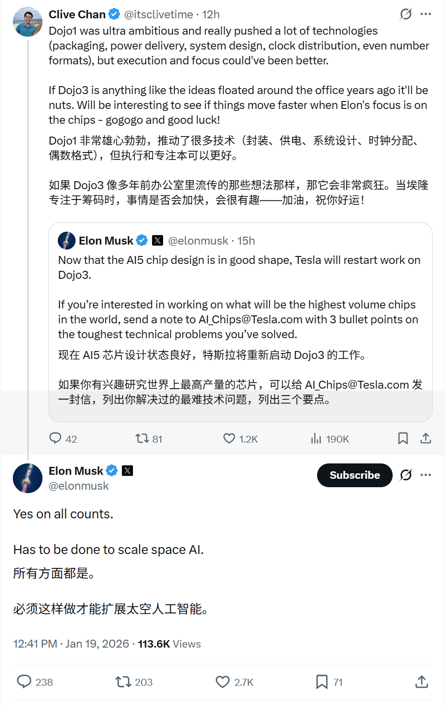
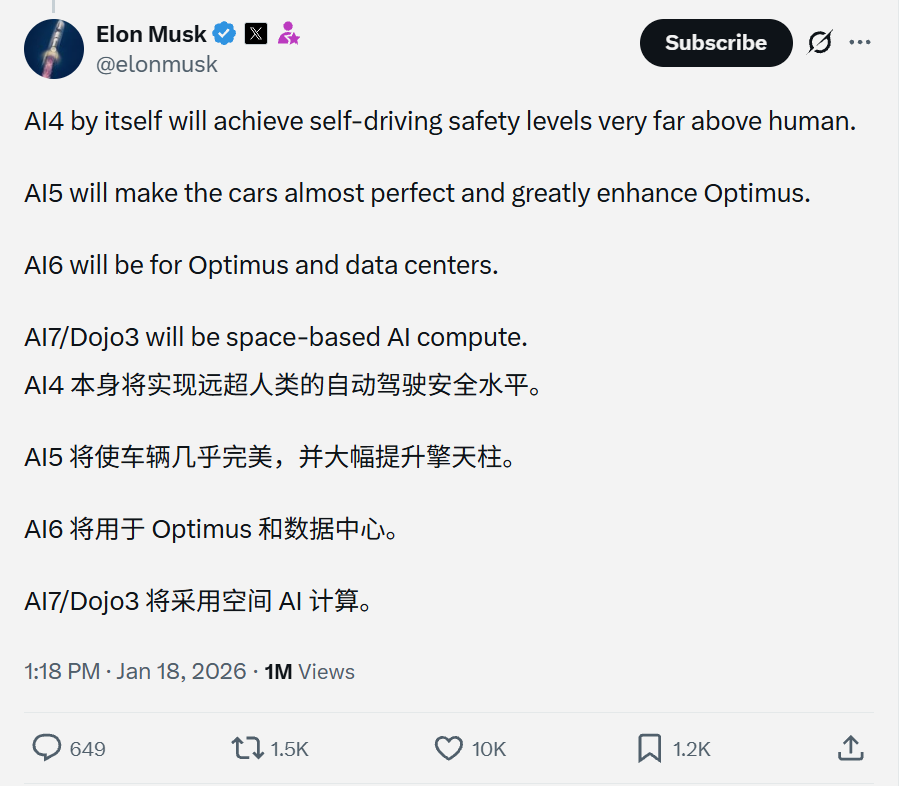
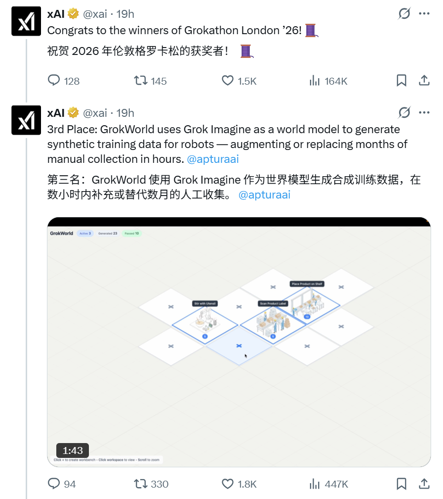
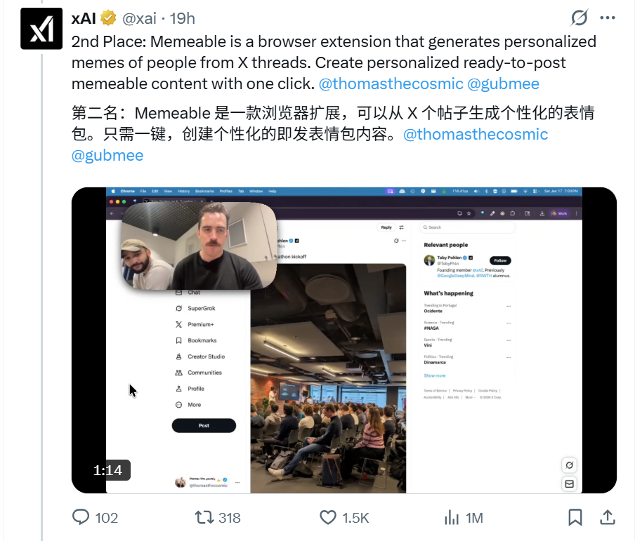
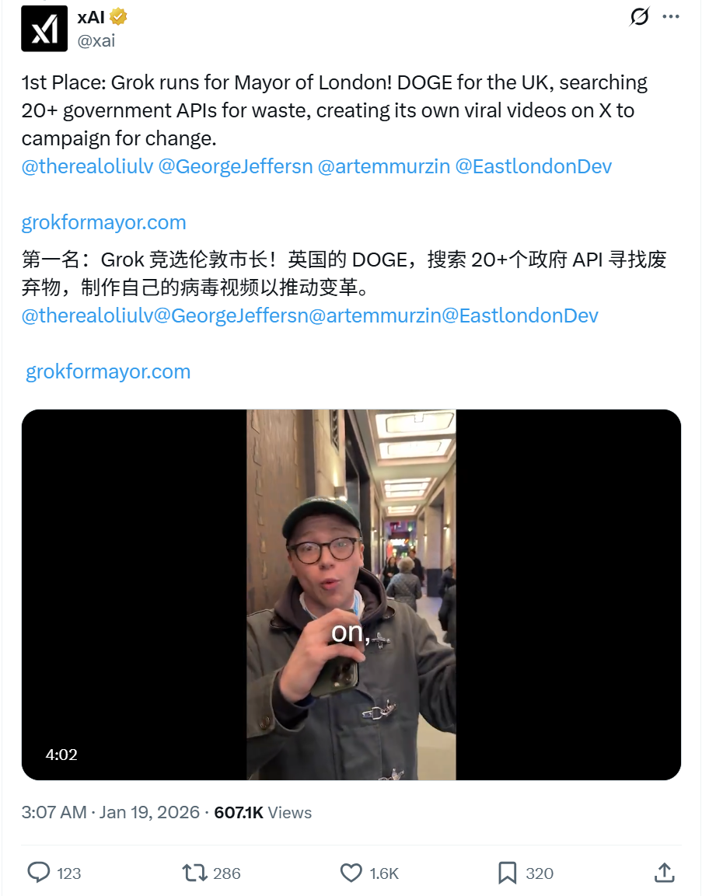
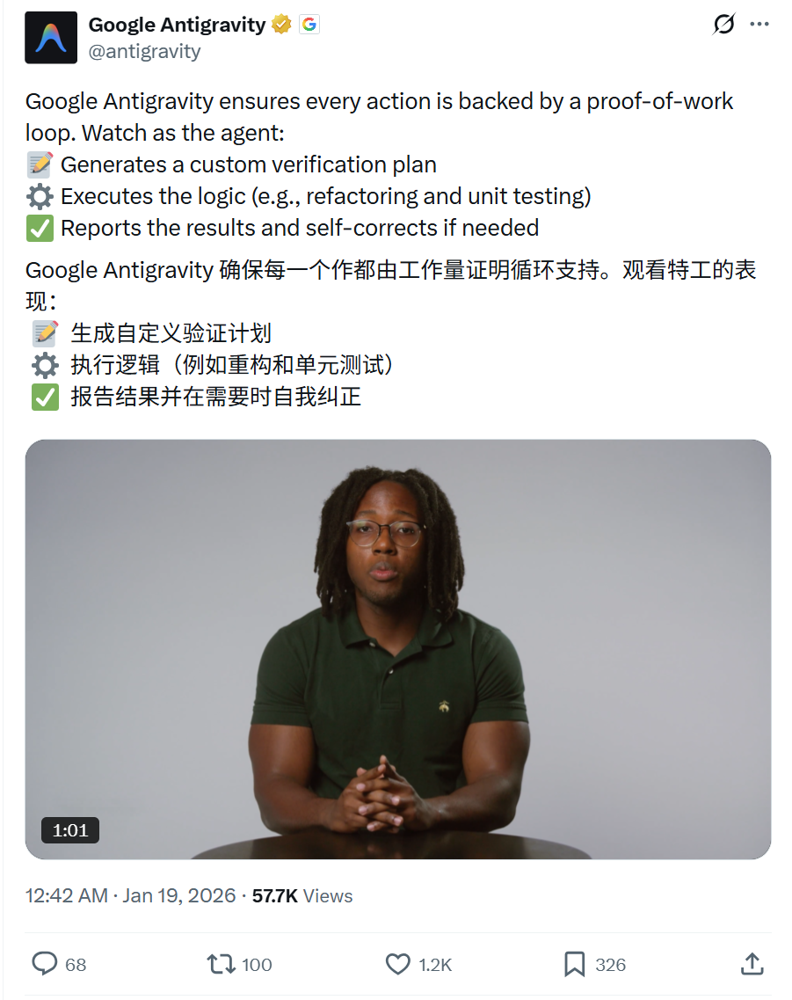

2026/01/19 硅谷AI圈动态
过去24小时，硅谷AI大佬在讨论什么
数据来源：X(twitter)平台实时推文
 小禾说AI (公众号)
清华小禾说AI (视频号)
小禾说AI (公众号)
清华小禾说AI (视频号)
📊 总览
在这 24 小时内，硅谷 AI 大佬们发布了 50 多条 AI 相关推文，主要集中在以下几个方向：
Tesla/xAI 双线推进，Google 强调 Agent 进步，OpenAI 和
Anthropic
无重大更新。
| 主题 | 关键事件 |
|---|---|
| Tesla AI芯片战略 | Elon Musk 披露 AI4-AI7/Dojo3 完整路线图， 并确认 Dojo3 重启用于太空 AI 规模化 |
| xAI Grokathon | xAI 公布黑客松获奖项目：Grok竞选伦敦市长(政府反浪费)、 Memeable浏览器扩展、GrokWorld机器人训练数据 |
| AI Agent | Google Antigravity 演示 proof-of-work 循环： 自动生成验证计划、执行重构/测试、自纠错机制 |
1
Tesla/SpaceX - AI芯片路线图与 Dojo3 重启确认
🚀 核心内容
- AI芯片完整路线图：
- AI4：自动驾驶安全水平将远超人类水平
- AI5：使汽车几乎完美，并大幅增强 Optimus 机器人能力
- AI6：将用于 Optimus 机器人和数据中心
- AI7/Dojo3：将用于太空 AI 计算
- Dojo3 重启确认：Musk确认重启Dojo3，认为必须这样做才能规模化空间 AI
- 战略意义：Tesla/SpaceX 将 Dojo3 定位为太空 AI 基础设施的核心
📸 相关截图


2
xAI - Grokathon London 获奖项目公布
🚀 核心内容
- 第一名 - Grok 竞选伦敦市长：
- "DOGE for UK" 理念，搜索 20+ 政府 API 发现浪费
- 在 X 上创建病毒式竞选视频推动变革
- 网站: grokformayor.com
- 第二名 - Memeable 浏览器扩展：
- 根据 X 帖子线程生成个性化 meme
- 一键生成可发布内容
- 第三名 - GrokWorld：
- 使用 Grok Imagine 作为世界模型生成机器人合成训练数据
- 数小时内可替代数月人工数据收集
📸 相关截图



3
Google - Antigravity Agent Proof-of-Work 循环演示
🚀 核心内容
- 核心机制：Google Antigravity 确保每一个操作都由工作量证明循环支持
- 工作流程：
- 📝 生成自定义验证计划
- ⚙️ 执行逻辑（如重构和单元测试）
- ✅ 报告结果并在需要时自我纠正
- 演示视频：1分03秒，展示 agentic 开发平台界面生成验证计划和执行逻辑
📸 相关截图
